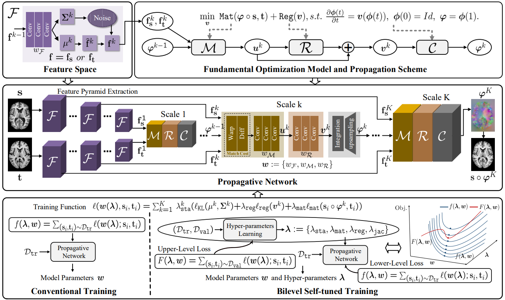
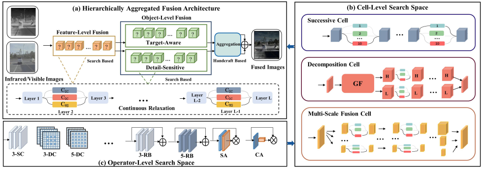
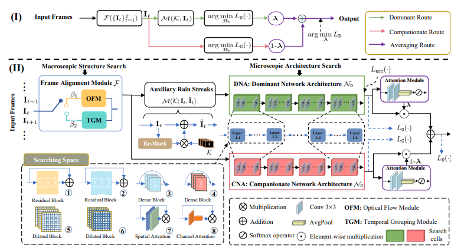
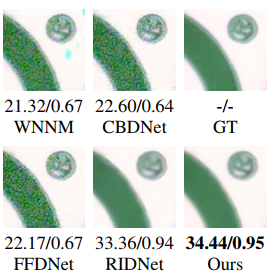

2021 Learning Deformable Image Registration from Optimization: Perspective, Modules, Bilevel Training and Beyond.
Risheng Liu, Zi Li, Xin Fan, Chenying Zhao, Hao Huang, Zhongxuan Luo. Abstract:
Conventional deformable registration methods aim at solving an optimization model carefully designed on image pairs and their computational costs are exceptionally high. In contrast, recent deep learning-based approaches can provide fast deformation estimation. These heuristic network architectures are fully data-driven and thus lack explicit geometric constraints which are indispensable to generate plausible deformations, e.g., topology-preserving. Moreover, these learning-based approaches typically pose hyper-parameter learning as a black-box problem and require considerable computational and human effort to perform many training runs. To tackle the aforementioned problems, we propose a new learning-based framework to optimize a diffeomorphic model via multi-scale propagation. Specifically, we introduce a generic optimization model to formulate diffeomorphic registration and develop a series of learnable architectures to obtain propagative updating in the coarse-to-fine feature space. Further, we propose a new bilevel self-tuned training strategy, allowing efficient search of task-specific hyper-parameters. This training strategy increases the flexibility to various types of data while reduces computational and human burdens. We conduct two groups of image registration experiments on 3D volume datasets including image-to-atlas registration on brain MRI data and image-to-image registration on liver CT data. Extensive results demonstrate the state-of-the-art performance of the proposed method with diffeomorphic guarantee and extreme efficiency. We also apply our framework to challenging multi-modal image registration, and investigate how our registration to support the down-streaming tasks for medical image analysis including multi-modal fusion and image segmentation. Flow Chart: 
Latex Bibtex Citation: @article{liu2021learning, |

Abstract:
Multi-modality image fusion refers to generating a complementary image that integrates typical characteristics from source images. In recent years, we have witnessed the remarkable progress of deep learning models for multi-modality fusion. Existing CNN-based approaches strain every nerve to design various architectures for realizing these tasks in an end-to-end manner. However, these handcrafted designs are unable to cope with the high demanding fusion tasks, resulting in blurred targets and lost textural details. To alleviate these issues, in this paper, we propose a novel approach, aiming at searching effective architectures according to various modality principles and fusion mechanisms. Specifically, we construct a hierarchically aggregated fusion architecture to extract and refine fused features from feature-level and object-level fusion perspectives, which is responsible for obtaining complementary target/detail representations. Then by investigating diverse effective practices, we composite a more flexible fusion-specific search space. Motivated by the collaborative principle, we employ a new search strategy with different principled losses and hardware constraints for sufficient discovery of components. As a result, we can obtain a task-specific architecture with fast inference time. Extensive quantitative and qualitative results demonstrate the superiority and versatility of our method against state-of-the-art methods. Flow Chart: 
Latex Bibtex Citation: @inproceedings{liu2021searching, |

Abstract:
Video deraining is an important issue for outdoor vision systems and has been investigated extensively. However, designing optimal architectures by the aggregating model formation and data distribution is a challenging task for video deraining. In this paper, we develop a model-guided triplelevel optimization framework to deduce network architecture with cooperating optimization and auto-searching mechanism, named Triple-level Model Inferred Cooperating Searching (TMICS), for dealing with various video rain circumstances. In particular, to mitigate the problem that existing methods cannot cover various rain streaks distribution, we first design a hyper-parameter optimization model about task variable and hyper-parameter. Based on the proposed optimization model, we design a collaborative structure for video deraining. This structure includes Dominant Network Architecture (DNA) and Companionate Network Architecture (CNA) that is cooperated by introducing an Attention-based Averaging Scheme (AAS). To better explore inter-frame information from videos, we introduce a macroscopic structure searching scheme that searches from Optical Flow Module (OFM) and Temporal Grouping Module (TGM) to help restore latent frame. In addition, we apply the differentiable neural architecture searching from a compact candidate set of task-specific operations to discover desirable rain streaks removal architectures automatically. Extensive experiments on various datasets demonstrate that our model shows significant improvements in fidelity and temporal consistency over the state-of-the-art works. Flow Chart: 
Latex Bibtex Citation: @ARTICLE{Mu_TIP_2021, |
|

Learning to Discover a Unified Architecture for
Low-Level Vision
Zhu Liu, Long Ma, Risheng Liu, Xin Fan
Abstract:
Neural Architecture Search (NAS) has pioneered various constructive principles to push forward the development of deep learning and achieved dramatic performances for diverse tasks recently. Existing NAS methods mainly focus on a single specific task to discover the architecture automatically. But actually, these methods lack ample exploitation and exploration for the latent ability of architecture search mechanism, e.g., from diverse cross-task distributions to discover a unified architecture automatically. In this work, we propose a Cross-task Differentiable ARchiTecture Search (Cross-DARTS for short) framework to discover a unified architecture for different low-level vision tasks automatically, to further widen the capacity of NAS. Specifically, we establish a new model to bridge different low-level vision tasks under the architecture search perspective. By performing a new data construction that integrates multi-task distributions, Cross-DARTS is obtained based on the differentiable search scheme. A multi-scale fusion cell with powerful contextual representation capacity is designed as the basic component of search space towards the low-level vision. Consistent achievements of promising results on three vision tasks, including noise, rain, joint rain and haze removal fully show our superiority. Latex Bibtex Citation:
@ARTICLE{9483692, |
 Collaborative Reflectance-and-Illumination Learning for High-Efficient Low-light Image Enhancement
Guijing Zhu Abstract:
In this paper, we settle the low-light image enhancement problem by developing a collaborative learning framework, which not only improves lightness and suppresses noises simultaneously but also with fast speed and requires few computational resources. The approach is inspired by the fact that reflectance and illumination are highly correlated to satisfy the well-known Retinex decomposition principle. With this in mind, we establish a Reflectance-and-Illumination Collaborative (RIC) block to depict the compact physical relationship between reflectance and illumination. By cascading multiple RIC blocks, we obtain an end-to-end RICNet to interactively optimize these two components in a collaborative manner. Benefiting from the RIC block that integrates powerful task cues, RICNet just needs few parameters to simultaneously improve brightness and remove noises. Extensive experiments demonstrate our superiority against existing stateof-the-art methods. We also make meticulous analysis for the RIC block. The results reveal the rationality and effectiveness of our built mechanism. Flow Chart:  Latex Bibtex Citation:
@inproceedings{zhu2021collaborative, |